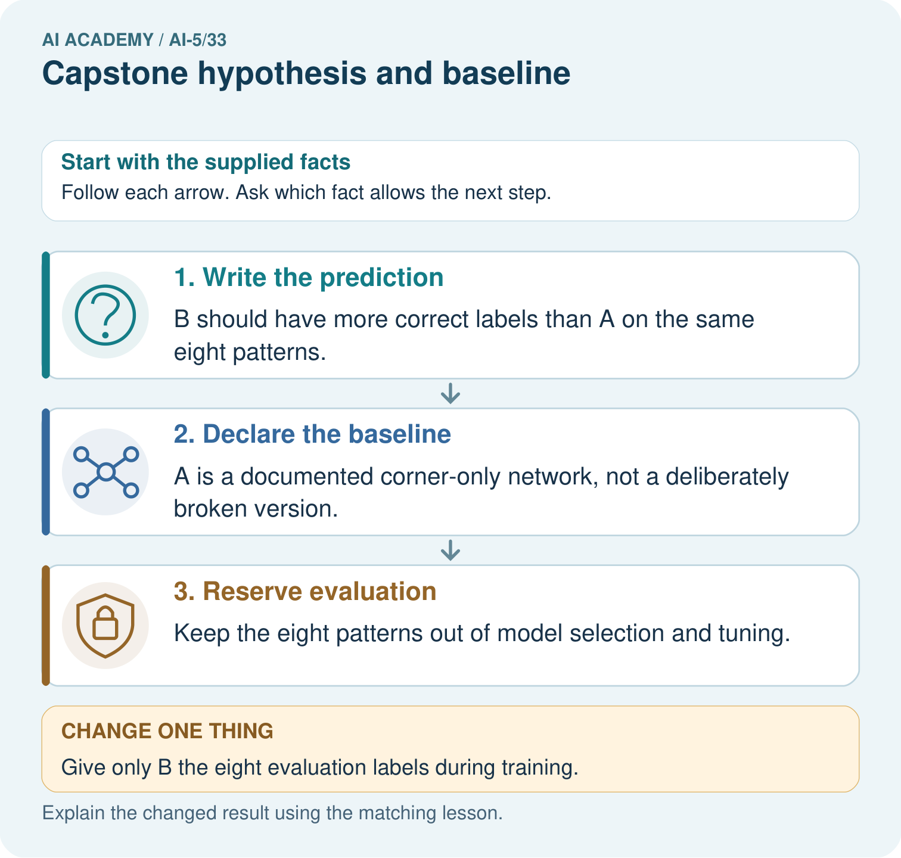

AI Academy · Level 5 · Grade 10 · Week 33 · Teacher guide
Capstone hypothesis and baseline
Learn to understand, design, build, test and explain AI systems responsibly.
Project: Image-pattern Network Investigation
Teacher guide · 1 of 6
Prepare the purpose, prerequisites and materials
Teach the learning cycle
Primary target: Write a testable capstone hypothesis and a credible baseline
| Session | Sequence and minutes | Resources |
|---|---|---|
| Session 1 · Understand · 45 min | 0–7: recall and prerequisite; 7–15: inspect the concrete case and predict; 15–30: teacher models the worked trace; 30–40: learners explain a step using the text and visual; 40–45: check the core idea. | Sections 1–6; record the brief recall in the workbook. |
| Session 2 · Practise · 45 min | 0–5: retrieve the procedure; 5–15: W2 completion practice; 15–23: explain and check with a partner; 23–30: each learner answers the misconception check; 30–40: targeted reteaching or a harder variation; 40–45: prepare the investigation. | Sections 7–10; use the matching workbook W2 and misconception check. |
| Session 3 · Investigate and transfer · 45 min | 0–5: retrieve the decision rule; 5–20: investigate or trace; 20–30: start the independent case; 30–38: connect the project; 38–43: act on feedback; 43–45: plan the return check. | Sections 9 and 11–14. Give extra time to finish the full task set; use Section 15 when the week includes a coding lab. |
This is a starting allocation of 135 minutes, not a validated duration. Preserve all named topics. Schedule extra time for connected examples, the full investigation, independent cases and project building. Repeated copies of a case share one recorded attempt; they are not new evidence.
Retrieval answer guidance
Documenting a network experiment
Without opening the old lesson, explain one key idea from Documenting a network experiment. Give an example and a mistake that the idea helps you avoid.
Look for: Record a network experiment with enough detail to replay its calculations
Reference example, not the only acceptable wording: Teacher explanation: Predict max(0, a*x); start a = 1 with no bias; rate 0.1; two full-batch updates; MSE is mean squared prediction error. T1 and T2 train, V1 validates; no shuffling or normalisation. Select lower validation MSE, ties to earlier update. Record the actual Python version, alongside the code and Python float arithmetic.
Dataset shift in neural models
Without opening the old lesson, explain one key idea from Dataset shift in neural models. Give an example and a mistake that the idea helps you avoid.
Look for: Explain how a changed input mix can change overall accuracy
Reference example, not the only acceptable wording: Teacher explanation: Clear accuracy is 90 percent in both cohorts; dim accuracy is 50 percent in both. Development has 80 percent clear and 20 percent dim; new use has 20 percent clear and 80 percent dim. The mix changes while observed group rates remain the same.
Similarity and normalisation
Without opening the old lesson, explain one key idea from Similarity and normalisation. Give an example and a mistake that the idea helps you avoid.
Look for: Calculate vector length and normalise a nonzero vector
Reference example, not the only acceptable wording: Teacher explanation: Lengths are 5, 10 and 5. Unit vectors are [0.6, 0.8], [0.6, 0.8] and [-0.6, -0.8]. The length difference between Q and A disappears; the opposite direction of C is preserved.
Use two 45-minute sessions. This capstone uses constructed scalar ReLU regression so every calculation is inspectable. It is an experiment in training and evidence, not a real-world deployment. Preserve written plans, data roles and raw predictions. Optional local Python requires no external packages or AI account. Do not expose independent-task solutions before collecting work.
Outcomes
Write a testable capstone hypothesis and a credible baseline
Specify data roles and a selection rule before inspecting results
Calculate baseline MSE and distinguish a success criterion from a result
Preparation
Printed lesson and workbook; paper and pencil
Calculator; optional local Python 3 interpreter
Fictional data only; reserve the independent task and fresh retry until assessment
Prerequisite answer
Validation influences selection, so its score is not independent final evidence. Freeze the chosen procedure before opening the final test.
End goal for the pictorial case
Explain capstone hypothesis and baseline with a traceable toy-network case and a bounded conclusion.
This added worked case illustrates the week’s main idea. Retain all original and connected topics; schedule its practice within the teaching cycle.
Teacher guide · 2 of 6
Explain and model the mechanism
A capstone needs a question that evidence can answer. “Build a better network” leaves better undefined. Here the question is: does two-update full-batch fitting of one scalar ReLU weight reduce validation mean squared error relative to the initial-weight baseline on a constructed positive-input task? Predict max(0, a*x), with no bias. The baseline has a = 1. The trained candidate starts at a = 1, uses learning rate 0.1 and exactly two updates. These choices are written before results are inspected.
The hypothesis is that the trained candidate has lower validation MSE. The plan does not guarantee that result. This task tests training and record keeping, not whether neural networks are preferable to every other model. A stronger comparison may also include an ordinary fitted line.
Training rows determine updates. Validation rows compare the prespecified candidate with the baseline. The final-test inputs and targets remain sealed until the procedure and reporting plan are frozen. MSE = sum of squared prediction errors divided by the number of evaluated rows. Baseline predictions on V1 and V2 are 3 and 4. Errors are -3 and -4, squared errors 9 and 16, and validation MSE is 25/2 = 12.5. There are two validation cases.
| Term | Meaning |
|---|---|
| Hypothesis | A testable expectation with a stated comparison and outcome |
| Baseline | A specified reference procedure evaluated on the same cases |
| Success criterion | A rule written before evaluation for judging the measured result |
| Reserved test | Cases kept out of fitting, tuning and selection |
Keep the evidence roles separate
Guided: errors -3 and -3 give MSE 9 on two rows. Candidate predictions are missing, so the hypothesis remains untested. Exit: final rows became selection evidence; document the change, freeze the revised plan and reserve new independent final cases.
Model the reasoning aloud
Use the complete worked example below before asking learners to complete W2. Reveal a small part, invite a prediction, then explain the deciding step. These teacher notes contain solutions; do not reveal the independent case answer during modelling.
The validation criterion is candidate MSE strictly below baseline MSE on V1 and V2. Equality does not pass. The final criterion is lower MSE than the same baseline on the sealed final rows. Report both scores and every raw prediction whether or not the criterion passes. Record the rule, training rows, update count, learning rate, loss, data versions and code version. A criterion specifies how to judge a future result; it is not evidence that the result already happened.
Keep validation and final criteria separate. Do not silently add epochs or change preprocessing after seeing a weak result. A changed plan is a new version and needs an honest account of what evidence informed it.
| Thinking move | Teacher prompt |
|---|---|
| Plan | What is given? What is the question? Which procedure fits these facts? |
| Do | Point to each input and intermediate step in the worked trace. Name the rule that allows the next step. |
| Check | Does the output answer the question? Which assumption or limitation prevents a larger claim? |
Use the diagram and verbal explanation together. Ask learners to match a sentence to a specific visual step; do not assign learners fixed visual or auditory learning styles.
A pictorial worked case: Capstone hypothesis and baseline
A testable image-pattern hypothesis. A team proposes that including the centre-pixel feature improves a small fixed network’s classification of toy image patterns.
The facts we will use
Two frozen versions are planned: A uses corner features only; B also uses the centre feature. Eight reserved toy patterns have labels defined before scoring.

Read the picture one step at a time
Why this result follows
A capstone hypothesis links a specific architectural change to a measured outcome. A baseline anchors the comparison; frozen labels and held-out patterns protect it from answer-key tuning.
What this example does not establish
Eight toy patterns support a narrow experiment, not claims about real photographs, children or universal architecture superiority.
Change one thing in the pictured case
Change: Give only B the eight evaluation labels during training.
Prediction: The proposed comparison becomes contaminated rather than a valid held-out test.
Reason: One version has gained privileged information from the reserved evaluation set.
Ask while showing the picture
Cover the result. Ask learners to name the inputs and predict the next step. Uncover one step, connect the icon to the actual procedure, and explain its evidence. Then change the supplied condition and compare. The picture is a representation; it does not document execution of a real AI model.
Teacher guide · 3 of 6
Demonstrate and guide practice
| Time or stage | Teacher action |
|---|---|
| Session 1 start to 7 minutes | Retrieve the prerequisite and ask students to explain the data roles. |
| 7 to 18 minutes | Read section 1 and complete W1 with a recorded reason. |
| 18 to 32 minutes | Trace section 2 and complete W2; compare raw values before conclusions. |
| 32 to 45 minutes | Explain the diagram and complete W3 in pairs; record any support. |
| Session 2 start to 8 minutes | Complete the guided response and discuss why the evidence has limits. |
| 8 to 20 minutes | Read the remaining explanation and prepare a concise experiment record. |
| 20 to 35 minutes | Collect W4 independently. Require calculations and a bounded claim. |
| 35 to 45 minutes | Use W5 and the exit response for feedback. Administer the fresh retry after feedback without the earlier solution. |
Use the worked example in Sections 3 and 6. Collect a prediction before revealing its result; ask the learner to point to each intermediate fact.
Provide a frame with question, fixed settings, changed setting, data roles, raw predictions, metric, conclusion and limitation. Allow a calculator and explicit squared-error columns. Extension: implement the arithmetic locally, preserve the program version, and explain why a successful replay adds no independent test cases.
Reduce help deliberately
Completion task: Compute baseline predictions, errors, squared errors and MSE on V1 and V2. State the denominator.
Teacher check: Teacher explanation: Predictions 3 and 4; errors -3 and -4; squared errors 9 and 16; MSE 12.5 over two rows.
Start by identifying the given inputs together. Leave the intermediate steps blank. If needed, model one step, then withdraw that help on the next step. Move to a full trace only when the partial trace is understood. For partners, alternate explainer and checker; collect a response from every learner before discussion.
Individual reasoning check
Use the worked case for Capstone hypothesis and baseline. Proposed explanation: “A hypothesis is a result”. Decide whether this explanation is supported. Point to the step or supplied fact that decides; explain your repair if needed.
Expected correction: A hypothesis states an expectation before the comparison. Results may support or contradict it.
Collect explanations, not only yes/no votes. If a misunderstanding is common, re-model the relevant step for the class. If it affects a few learners, give a short targeted group explanation while others solve a more demanding variation.
Pictorial practice question
Name the intended change, the baseline and the measured outcome. Why must both versions avoid training on the eight reserved labels?
Reasoned teacher answer
The change is adding the centre feature; A is corner-only. The outcome is correct labels out of the same eight patterns. Using reserved labels to train B leaks evaluation information and invalidates the unseen comparison.
Changed-case reasoning: The proposed comparison becomes contaminated rather than a valid held-out test. One version has gained privileged information from the reserved evaluation set.
Collect each learner’s explanation before discussion. Use the first missing connection between input, deciding step and result to choose support. This question is worked-case practice, not fresh mastery evidence.
Teacher guide · 4 of 6
Run the investigation and diagnose misconceptions
A hypothesis is a result: A hypothesis states an expectation before the comparison. Results may support or contradict it.
A weak baseline proves neural networks help: An initial-weight reference checks improvement from that starting point, not superiority to a fitted line.
Renaming a used test restores independence: A new name cannot undo using its results for selection.
Use Section 9 for the evidence ledger. Add a boundary or missing-input case and record the expected response before checking. More successful repeats of one case do not establish wider coverage.
Match the support to the first error
| What the response shows | Next teaching action |
|---|---|
| Missing or misread facts | Read the case aloud, mark supplied versus unknown facts, and let the learner restate it. |
| Wrong procedure | Return to the deciding step in the worked case. Contrast it with the proposed incorrect explanation. |
| Arithmetic or implementation error | Trace intermediate values or lines; preserve the first mismatch and retry that step. |
| Correct result without a reason | Ask for a trace and a changed case before marking independent understanding. |
| An unsupported wider claim | Ask which supplied evidence supports the claim and which further observation would be needed. |
Offer an oral explanation, drawing, enlarged visual or fewer examples when that removes a reading/writing barrier. Keep the same reasoning goal. Stretch secure learners by changing a boundary or assumption and asking them to defend the effect, not simply by assigning more of the same questions.
Teacher guide · 5 of 6
Assess and explain the answers
Guided and exit questions
Guided: errors -3 and -3 give MSE 9 on two rows. Candidate predictions are missing, so the hypothesis remains untested. Exit: final rows became selection evidence; document the change, freeze the revised plan and reserve new independent final cases.
W1 Write the hypothesis
State the prediction rule, baseline, candidate learning rate and update count, comparison data and metric. Write a testable hypothesis.
Teacher explanation: Predict max(0, a*x) without bias; baseline a = 1; candidate starts at 1, learning rate 0.1, two full-batch updates on T1/T2. Hypothesis: candidate validation MSE on V1/V2 is strictly below the baseline MSE.
W2 Calculate the reference score
Compute baseline predictions, errors, squared errors and MSE on V1 and V2. State the denominator.
Teacher explanation: Predictions 3 and 4; errors -3 and -4; squared errors 9 and 16; MSE 12.5 over two rows.
W3 Audit the plan
A proposal says “try models until the test score looks good”. Identify the missing fixed choices and explain why that test is not independent.
Teacher explanation: It omits architecture, baseline, training settings, metric, stopping/selection rule and split policy. Repeated choices based on the test use it for development; reserve new independent final data after freezing the revised procedure.
W4 Plan a new case independently
A new task predicts max(0, a*x), with baseline a = 1. Training rows are (1,3) and (2,6); validation rows are (3,9) and (4,12); final rows are sealed. Specify a candidate starting at 1 with learning rate 0.1 and two full-batch updates. Calculate baseline validation MSE and write a strict improvement criterion. Has the candidate succeeded yet?
Teacher explanation: Baseline predictions 3 and 4, errors -6 and -8, squared errors 36 and 64, MSE 50 over two rows. Candidate is fixed at two updates with rate 0.1 on training only; success means candidate validation MSE < 50. No candidate results have been supplied, so success is unknown.
W5 Preserve the reserved evidence
A partner inspects final labels and changes the learning rate. Explain how to document this and obtain independent evidence.
Teacher explanation: Record the inspection and changed plan. Those rows informed selection and cannot honestly serve as untouched final evidence. Freeze the revised procedure and use newly reserved independent cases; retain the earlier result as development evidence.
Independent assessment and fresh retry
W4 requires baseline MSE 50, all fixed settings, a strict < 50 criterion and no premature success claim. Fresh retry: use validation (3,12) and (4,16), same baseline and candidate settings. Baseline errors -9 and -12 give MSE (81+144)/2 = 112.5; require a < 112.5 criterion and an untested conclusion.
Assess independent transfer
Selected case: A new task predicts max(0, a*x), with baseline a = 1. Training rows are (1,3) and (2,6); validation rows are (3,9) and (4,12); final rows are sealed. Specify a candidate starting at 1 with learning rate 0.1 and two full-batch updates. Calculate baseline validation MSE and write a strict improvement criterion. Has the candidate succeeded yet?
Selected case answer
Teacher explanation: Baseline predictions 3 and 4, errors -6 and -8, squared errors 36 and 64, MSE 50 over two rows. Candidate is fixed at two updates with rate 0.1 on training only; success means candidate validation MSE < 50. No candidate results have been supplied, so success is unknown.
| Dimension | Evidence required |
|---|---|
| Explanation | Names the applicable idea or procedure and ties it to the supplied facts. |
| Trace and result | Preserves the given inputs and shows the relevant intermediate steps; distinguishes a prediction from an observed execution. |
| Limits | States the assumptions, missing evidence or conditions under which the result would change. |
Record each dimension as not yet, with support, or independent. Accept a valid alternative procedure with a defensible trace. Do not penalise an honestly recorded model failure if the learner correctly explains its evidence and limits.
Feedback that the learner uses
Name the earliest unsupported step and give one action to repair it. Have the learner make that repair now and explain why. Then assess the relevant skill on a fresh, fully specified case. Confirm it was not previously practised with feedback; solve and check the new case before assigning it. A follow-up design prompt is a starting brief, not automatically an equivalent test.
Teacher guide · 6 of 6
Connect the project, support and next lesson
For Image-pattern Network Investigation, use this week’s independent task as a rehearsal for the final evidence pack: A new task predicts max(0, a*x), with baseline a = 1. Training rows are (1,3) and (2,6); validation rows are (3,9) and (4,12); final rows are sealed. Specify a candidate starting at 1 with learning rate 0.1 and two full-batch updates. Calculate baseline validation MSE and write a strict improvement criterion. Has the candidate succeeded yet? Keep actual observations separate from expected results, preserve failures, compare a baseline and explain the limits.
Provide a frame with question, fixed settings, changed setting, data roles, raw predictions, metric, conclusion and limitation. Allow a calculator and explicit squared-error columns. Extension: implement the arithmetic locally, preserve the program version, and explain why a successful replay adds no independent test cases.
Week 34 runs controlled learning-rate comparisons while preserving the recorded data roles.
Retain the project ledger and assess a changed case after support. Check the relevant prerequisite before carrying this component forward.
Plan the delayed return
Suggested return points in this level: ai-5/34, ai-5/36. Use actual classroom dates, adjusting for holidays and gaps. One, three and six teaching weeks are scheduling choices, not a claimed optimal spacing.
At a delayed check, ask for the idea from memory and a changed application. Compare with the earlier independent response and record support used. For a new level, revisit the previous capstone before checking the new prerequisites.
| Record | Teacher evidence |
|---|---|
| Learner code and date | |
| Concept and case used; prior exposure | |
| Explanation / trace / limits | |
| Support and first repair | |
| Changed case and delayed outcome | |
| Next teaching action |
Use the evidence to choose reteaching or the next step. A completed page, confidence rating or attractive project does not by itself demonstrate understanding.
Project evidence from this case
For the Image-pattern Network Investigation, save the labelled trace and the changed-case explanation beside the experiment record. State exactly what this example supports before linking it to the wider capstone claim.